A qudit is a generalization of a qubit in that it's a quantum state of
finite dimension. Where a qubit's state can be described by a linear combination
of two orthogonal states, a qudit can be described by a linear combination of
\( d \)-many orthogonal states. Perhaps this is best stated in the form of an
example, the extension of the well know plus state, \(\vert +\rangle =
\frac{1}{\sqrt{2}}\left(\vert 0\rangle + \vert 1\rangle\right)\), to a qudit
of dimension d can be stated explicity as:
So why do we care about qudits when we have qubits? One good reason to consider
these d-dimensional spaces is that they facilitate d-valued quantum logic, which may
be more computationally efficient for some tasks. To accomplish
a real implementation of this d-valued quantum logic we need to consider a certain set
of common Generalized Gates. For a modern review
article on the matter see here.
Relevant Qudit Gates
The most relevant gates for our considerations at the moment are the Quantum Fourier Transform (QFT), the
generalized \(X\) gate, the generalized \(Z\) gate and the idea of a multi-qudit controlled gate [see Muthukrishnan and
Stroud's
Multivalued logic gates for quantum computation
].
These gates are generalizations of the Pauli \(X\) and Pauli \(Z\) operators of two-dimensional
complex Hilbert spaces. For greater detail and other possible generalizations of the Pauli's in higher
dimensions, see here.
Otherwise, the general form of the gates are described individually below. Note that the generalized gates can
be applied to arbitrary numbers of qudits, though the \(Z\) and \(X\) gates are generally applied to one qudit
at a time as \(X_d\) and \(Z_d\).
\(X_{d^n}\) Generalized \(X\) Gate
The generalized X gate for \(n\) qudits, also known as the shift gate, can be thought of as a cyclic permutation on the basis states. The one qudit generalized
\(X_{d}\) can be seen as an operator that adds one to the basis vector's index, and if it reaches \(d\) for a qu\(d\)it, it returns
that digit of the index to \(0\).
The generalized Z gate for \(n\) qudits of dimension \(d\), also known as the
clock gate, assosciates to each basis vector \(\vert k\rangle\)
a phase \(e^{2\pi i k/d^n}=\omega^{k}_{d^n}\). In the complex plane,
it effectively rotates each basis vector \(\vert k\rangle\)'s amplitude
by \(\frac{2\pi k}{d^n}.\)
The inverse Quantum Fourier transform for \(n\)-qu\(d\)its can be described element-wise as \(QFT_{d^n}^{-1 \ (i,j)}=\omega_{d^n}^{-i\cdot j}\),
giving the matrix form:
The \(QFT_d\) when applied to one qudit of dimension \(d\) is also
known as a radix-\(d\) Chrestenson gate.
\(C^{n}G_{d^l}\) Qu\(d\)it Control \(G\)ates
The non-local controlled gates are also very important. They're definitively multi-qudit gates in that thay aren't separable into a tensor product
of single-qudit gates. They're defined as gates that only apply a gate to the \(l\) target qudits when the \(n\) control qudit's hold a certain value.
For a one qudit gate \(G_d\) (i.e. \(l=1\) ) and \(n\) control qudits where the gate is only applied when the control qudits hold the value \(k=1\),
the controlled \(G_d\) gate takes the form of the following block diagonal matrix:
where each element is really a \(d\times d \) matrix.
Alternatively, we can define the control gate to apply different gates for different
states of the control qudits, as opposed to just one specific state of the control qudits.
This results in a \(d^{n+l}\) block diagonal matrix of \(n\) different \(d^l \times d^l \) matrices. Shown below,
One example of this is the
gate that applies the same gate raised to the \( k \)th power for the \( k \)th state
of the target qudit (where \( k \) ranges from to \(0\) to\( (d^n-1) \)), shown explicitly below as
$$
\begin{bmatrix}
\mathbb{I} & 0 & 0 &\cdots & 0\\
0& G^{} & 0 &\cdots & 0\\
0& 0 & G^{2} &\cdots & 0\\
\vdots&\vdots&\vdots& \ddots & \vdots\\
0& 0 & 0 &\cdots & G^{(d^n-1)}
\end{bmatrix}
$$
Which is known as a
quantum multiplexer.
Basic \(d\)-ary Quantum Algorithms
Some basic quantum algorithms of the qubit paradigm have already been extended to
\(d\)-ary qudit circuits. The quantum phase estimation algorithm has been extended to
qudit circuits in several papers already, and has a pretty straight forward extension from
the qubit case. The quantum search algorithm has several possible extensions beyond the binary qubit realm,
one is to simply evaluate sparse binary functions over new dimensional spaces. The other
extension is to the evaluation of specific outcomes of \(d\)-ary functions. Some progress in this
direction has been made very recently.
Notice the controlled \(\mathbf{U}\) gates here are multiplexers, signified by the circled \(\mathcal{M}\) on the control qudit.
Multiple-Valued Grover Search Algorithm
Grover's search algorithm can only be used to evaluate sparse binary
functions, that is, multivariate functions where variables can take one of two values.
A natural question to ask then, is whether we may encode multivariate finite functions of
arbitrary input dimension. And, indeed we can in qudit spaces, but whether we can efficiently
evaluate these encodings is yet undecided.
Finite-Function-Encoding States
Using qu\(d\)its and the \(d\)th roots of unity, we can actually encode
multivariate functions over finite fields. The states we'll utilize are full
superpositions of the basis vectors of multi-qudit states. In other words, if we
extend the plus state of qubits \( \vert +\rangle\)
to qudits \( \vert +_d\rangle\) and then vary
the amplitudes by the \(d\)th roots of unity we can encode finite functions in the values of the amplitudes exponents.
$$
\vert f(x_n)\rangle := \frac{1}{\sqrt{d^n}}\sum_{k=0}^{d^n-1}\omega_d^{f(x_n)}\vert k \rangle
$$
Let's consider a simple two qutrit example that encodes the polynomial \(f(x,y)=xy^2+x\)
over the finite field \(\mathbb{F}_3\) (that is, the field of integers modulo three).
In this context, it's implied the relative roots of unitary are those of order 3 as we are
considering qutrits. Thus, below,
our \(\omega\) is \(\omega_3=e^{\frac{2\pi i}{3}}\).
This encoding can be physically realized by prescribed application
of controlled generalized \(Z\) gates. For prime \(d\) we have that all finite-functions
can be described by multivariate polynomials. For more detail, see Finite-Function-Encoding Quantum States.
Generalized Grover Diffusion Operator
The generalized Grover diffusion operator, \(\Delta_d(n)\), as defined by Samuel Hunt and Maximilien Gadouleau in
Grover’s Algorithm and Many-Valued Quantum Logic is described in circuit form below.

Let's look at a three qutrit example and see what the operator \(\Delta_3(3)\) explicitly looks like.
The circuit is the one below:

Note that we now omit the subscripts for the gates as the context assures us they're all 3 dimensional
(given we're dealing with qutrits).
The principle part of the search algorithm is just the repeated application of a function encoding gate
and a generalized Grover diffusion operator, together termed a Grover iteration. After a prescribed
number of applications of this Grover iteration (this number depends on the relative proportion of
the different values), we measure in the computational basis and expect a
high amplitude in the sparsest value. After a few more iterations we expect a high amplitude in the
two sparsest values and so on, until we return to high amplitude exclusively in the sparsest
value again.
Google's quantum SDK, Cirq, natively supports qudits and qudit circuit simulations. A git repository of
these qudit gates and relevant items is graciously under development by Andy Phillips and can be found here.